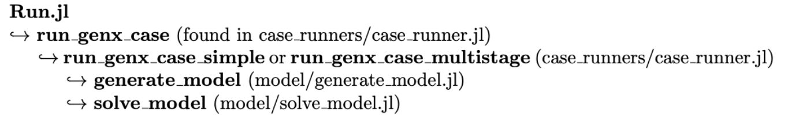

Tutorial 4: Model Generation
Interactive Notebook of the tutorial
To run GenX, we use the file Run.jl. This file will solve the optimization problem and generate the output files as described in the documentation and previous tutorial. It does so by first generating the model, then solving the model, both according to settings described in genx_settings.yml. However, Run.jl only contains one commmand, run_genx_case!(dirname(@__FILE__)). This can be confusing for users viewing the files for the first time. In reality, this function signals many more functions to run, generating and solving the model. This tutorial explains how the model in GenX is generated. The next tutorial will then describe how it is solved.
We'll start by explaining JuMP, the optimization package that GenX uses to generate and solve the model.
Table of Contents

JuMP is a modeling language for Julia. It allows users to create models for optimization problems, define variables and constraints, and apply a variety of solvers for the model.
GenX is a Linear Program (LP), which is a form of optimization problem in which a linear objective is minimized (or maximized) according to a set of linear constraints. For more information on LPs, see Wikipedia.
using JuMP
using HiGHSLet's say we want to build a power grid consisting of and coal and wind plants. We want to decrease the cost of producing energy while still meeting a certain emissions threshold and full grid demand. Coal plants are cheaper to build and run but have higher emissions than wind farms. To find the minimum cost of a power grid meeting these constraints, we construct an LP using JuMP.
\[\begin{aligned} & \min 10 x + 15 y &\text{Objective function (cost)}\\ & \text{s.t.} & \\ & x + y \geq 10 &\text{Grid Demand}\\ & 55x + 70y \leq \ 1000 &\text{Construction constraint}\\ & 40 x + 5 y \leq 200 &\text{Emissions constraint} \\ & x, y \geq 0 &\text{Non-negativity constraints}\\ \end{aligned}\]
The core of the JuMP model is the function Model(), which creates the structure of our LP. Model() takes an optimizer as its input.
power = Model(HiGHS.Optimizer)A JuMP Model
Feasibility problem with:
Variables: 0
Model mode: AUTOMATIC
CachingOptimizer state: EMPTY_OPTIMIZER
Solver name: HiGHSThe model needs variables, defined using the JuMP function @variable:
@variable(power,x) # Coal
@variable(power,y) # WindUsing the JuMP function @constraint, we can add the constraints of the model:
@constraint(power, non_neg_x, x >= 0) # Non-negativity constraint (can't have negative power plants!)
@constraint(power, non_neg_y, y >= 0) # Non-negativity constraint
@constraint(power, emissions, 40x + 5y <= 200) # Emisisons constraint
@constraint(power, construction_costs, 55x + 70y <= 1000) # Cost of constructing a new plant
@constraint(power, demand, x + y >= 10) # Grid demand$x + y \geq 10$
Next, the function @expression defines an expression that can be used in either a constraint or objective function. In GenX, expressions are defined throughout the model generation and put into constraints and the objective function later.
@expression(power,objective,10x+15y)$ 10 x + 15 y $
Finally, we define the objective function itself:
@objective(power, Min, objective)$10 x + 15 y$
Our model is now set up!
print(power)\[\begin{aligned} \min\quad & 10 x + 15 y\\ \text{Subject to} \quad & x \geq 0\\ & y \geq 0\\ & x + y \geq 10\\ & 40 x + 5 y \leq 200\\ & 55 x + 70 y \leq 1000\\ \end{aligned} \]
In the next Tutorial, we go over how to use JuMP to solve the model we've constructed.
When Run.jl is called, the model for GenX is constructed in a similar way, but with many more factors to consider. The next section goes over how the GenX model is constructed before it is solved.
Generate Model
The basic structure of the way Run.jl generates and solves the model is as follows:

The function run_genx_case(case) takes the "case" as its input. The case is all of the input files and settings found in the same folder as Run.jl. For example, in example_systems/1_three_zones, the case is:
cd(readdir,"example_systems/1_three_zones")9-element Vector{String}:
".DS_Store"
"README.md"
"Run.jl"
"TDR_results"
"policies"
"resources"
"results"
"settings"
"system"Run_genx_case defines the setup, which are the settings in genx_settings.yml. From there, either run_genx_case_simple(case, mysetup) orrun_genx_case_multistage(case, mysetup) is called. Both of these define the inputs and optimizer. The optimizer is the solver as specified in genx_settings.yml, and the inputs are a variety of parameters specified by the settings and csv files found in the folder. Both of these functions then call generate_model(mysetup, myinputs, OPTIMIZER), which is the main subject of this tutorial.
As in the above example, generate_model utilizes the JuMP functions Model(), @expression, @variable, and @constraints to form a model. This section goes through generate_model and explains how the expressions are formed to create the model.
Arguments
Generate_model takes three arguments: setup, inputs, and optimizer:
To generate the arguments, we have to set a case path (this is set automatically when Run.jl is called):
using GenXcase = joinpath("example_systems/1_three_zones") "example_systems/1_three_zones"Setup includes the settings from genx_settings.yml along with the default settings found in configure_settings.jl. The function configure_settings combines the two.
genx_settings = GenX.get_settings_path(case, "genx_settings.yml") # Settings YAML file path
writeoutput_settings = GenX.get_settings_path(case, "output_settings.yml") # Set output path
setup = GenX.configure_settings(genx_settings,writeoutput_settings) # Combines genx_settings with defaults Configuring Settings
Dict{Any, Any} with 24 entries:
"NetworkExpansion" => 0
"TimeDomainReductionFolder" => "TDR_Results"
"EnableJuMPStringNames" => false
"Trans_Loss_Segments" => 1
"ModelingtoGenerateAlternativeSlack" => 0.1
"Solver" => "HiGHS"
"Reserves" => 0
"MultiStage" => 0
"OverwriteResults" => 0
"ModelingToGenerateAlternatives" => 0
"MaxCapReq" => 1
"MinCapReq" => 1
"CO2Cap" => 2
"WriteShadowPrices" => 1
"ModelingToGenerateAlternativeIterations" => 3
"ParameterScale" => 1
"EnergyShareRequirement" => 1
"PrintModel" => 0
"TimeDomainReduction" => 1
"CapacityReserveMargin" => 1
"MethodofMorris" => 0
"StorageLosses" => 1
"IncludeLossesInESR" => 0
"UCommit" => 2It's here that we create the folder TDR_results before generating the model. This occurs if TimeDomainReduction is set to 1 in the setup. As a reminder, TDR_results is not overwritten when called again. The cell below will delete a preexisting TDR_results folder if it is there.
TDRpath = joinpath(case, setup["TimeDomainReductionFolder"])
system_path = joinpath(case, setup["SystemFolder"])
settings_path = GenX.get_settings_path(case)
if "TDR_results" in cd(readdir,case)
rm(joinpath(case,"TDR_results"), recursive=true)
end
if setup["TimeDomainReduction"] == 1
GenX.prevent_doubled_timedomainreduction(system_path)
if !GenX.time_domain_reduced_files_exist(TDRpath)
println("Clustering Time Series Data (Grouped)...")
GenX.cluster_inputs(case, settings_path, setup)
else
println("Time Series Data Already Clustered.")
end
end Clustering Time Series Data (Grouped)...
Reading Input CSV Files
Network.csv Successfully Read!
Load_data.csv Successfully Read!
Fuels_data.csv Successfully Read!
Generators_data.csv Successfully Read!
Generators_variability.csv Successfully Read!
Validating time basis
Capacity_reserve_margin.csv Successfully Read!
Minimum_capacity_requirement.csv Successfully Read!
Maximum_capacity_requirement.csv Successfully Read!
Energy_share_requirement.csv Successfully Read!
CO2_cap.csv Successfully Read!
CSV Files Successfully Read In From Example_Systems_Tutorials/SmallNewEngland/OneZone
Dict{String, Any} with 9 entries:
"RMSE" => Dict("Load_MW_z1"=>1100.54, "NG"=>0.312319, "onshore_wind_…
"OutputDF" => DataFrame…
"ColToZoneMap" => Dict("Load_MW_z1"=>1, "battery_z1"=>1, "natural_gas_combin…
"ClusterObject" => KmeansResult{Matrix{Float64}, Float64, Int64}([-1.38728 -1…
"TDRsetup" => Dict{Any, Any}("IterativelyAddPeriods"=>1, "ExtremePeriods…
"Assignments" => [1, 1, 1, 1, 2, 2, 2, 2, 2, 3 … 6, 4, 3, 5, 5, 9, 10, 10…
"InputDF" => [672×49 DataFrame
"Weights" => [673.846, 1010.77, 673.846, 842.308, 842.308, 1853.08, 185…
"Centers" => Any[1, 7, 12, 15, 23, 24, 28, 29, 48, 50, 51]The optimizer argument is taken from setup:
OPTIMIZER = GenX.configure_solver(settings_path,HiGHS.Optimizer)The function configure_solver converts the string from "Solver" to a MathOptInterface optimizer so it can be used in the JuMP model as the optimizer. It also goes into the settings file for the specified solver (in this case HiGHS, so 1_three_zones/settings/highs_settings.yml) and uses the settings to configure the solver to be used later.
typeof(OPTIMIZER) MathOptInterface.OptimizerWithAttributesThe "inputs" argument is generated by the function load_inputs from the case in run_genx_case_simple (or multistage). If TDR is set to 1 in the settings file, then load_inputs will draw some of the files from the TDR_results folder. TDR_results is produced when the case is run.
inputs = GenX.load_inputs(setup, case) Reading Input CSV Files
Network.csv Successfully Read!
Load_data.csv Successfully Read!
Fuels_data.csv Successfully Read!
Generators_data.csv Successfully Read!
Generators_variability.csv Successfully Read!
Validating time basis
Capacity_reserve_margin.csv Successfully Read!
Minimum_capacity_requirement.csv Successfully Read!
Maximum_capacity_requirement.csv Successfully Read!
Energy_share_requirement.csv Successfully Read!
CO2_cap.csv Successfully Read!
CSV Files Successfully Read In From Example_Systems_Tutorials/SmallNewEngland/OneZone
Dict{Any, Any} with 66 entries:
"Z" => 1
"LOSS_LINES" => [1]
"RET_CAP_CHARGE" => Int64[]
"pC_D_Curtail" => [50.0]
"dfGen" => [4×68 DataFram
"pTrans_Max_Possible" => [2.95]
"pNet_Map" => [1.0;;]
"omega" => [4.01099, 4.01099, 4.01099, 4.01099, 4.01099, 4.0109…
"RET_CAP_ENERGY" => [4]
"RESOURCES" => String31["natural_gas_combined_cycle", "solar_pv", "…
"COMMIT" => [1]
"pMax_D_Curtail" => [1]
"STOR_ALL" => [4]
"THERM_ALL" => [1]
"dfCO2CapZones" => [1;;]
"REP_PERIOD" => 11
"MinCapReq" => [5.0, 10.0, 6.0]
"STOR_LONG_DURATION" => Int64[]
"dfCapRes" => [0.156;;]
"STOR_SYMMETRIC" => [4]
"VRE" => [2, 3]
"RETRO" => Int64[]
"THERM_COMMIT" => [1]
"TRANS_LOSS_SEGS" => 1
"H" => 168
⋮ => ⋮Now that we have our arguments, we're ready to generate the model itself.
Run generate_model
This subsection replicates the arguments in the function generate_model. Note: Running some of these cells for a second time will throw an error as the code will attempt to define a new expression with the name of an existing expression. To run the Tutorial again, clear and restart the kernel.
First, we initialize a model and define the time step and zone variables
EP = Model(OPTIMIZER) # From JuMPA JuMP Model
Feasibility problem with:
Variables: 0
Model mode: AUTOMATIC
CachingOptimizer state: EMPTY_OPTIMIZER
Solver name: HiGHST = inputs["T"]; # Number of time steps (hours)
Z = inputs["Z"]; # Number of zonesNext, the dummy variable vZERO, the objective function, the power balance expression, and zone generation expression are all initialized to zero:
# Introduce dummy variable fixed to zero to ensure that expressions like eTotalCap,
# eTotalCapCharge, eTotalCapEnergy and eAvail_Trans_Cap all have a JuMP variable
GenX.set_string_names_on_creation(EP, Bool(setup["EnableJuMPStringNames"]))
@variable(EP, vZERO == 0);
# Initialize Power Balance Expression
# Expression for "baseline" power balance constraint
GenX.create_empty_expression!(EP, :ePowerBalance, (T, Z))
# Initialize Objective Function Expression
EP[:eObj] = AffExpr(0.0)
GenX.create_empty_expression!(EP, :eGenerationByZone, (Z, T))
# Energy losses related to technologies
GenX.create_empty_expression!(EP, :eELOSSByZone, Z) 1×1848 Matrix{Int64}:
0 0 0 0 0 0 0 0 0 0 0 0 0 … 0 0 0 0 0 0 0 0 0 0 0 0Next, we go through some of the settings in setup and, if they've been set to be utilized (i.e. have a nonzero value), define expressions from their corresponding input files:
# Initialize Capacity Reserve Margin Expression
if setup["CapacityReserveMargin"] > 0
GenX.create_empty_expression!(EP, :eCapResMarBalance, (inputs["NCapacityReserveMargin"], T))
end
# Energy Share Requirement
if setup["EnergyShareRequirement"] >= 1
GenX.create_empty_expression!(EP, :eESR, inputs["nESR"])
end
if setup["MinCapReq"] == 1
GenX.create_empty_expression!(EP, :eMinCapRes, inputs["NumberOfMinCapReqs"])
end
if setup["MaxCapReq"] == 1
GenX.create_empty_expression!(EP, :eMaxCapRes, inputs["NumberOfMaxCapReqs"])
endThe other settings will be used later on.
Next, we define the model infrastructure using functions found in src/core. These take entries from inputs and setup to create more expressions in our model (EP). To see what the functions do in more detail, see the source code and core documentation.
# Infrastructure
GenX.discharge!(EP, inputs, setup)
GenX.non_served_energy!(EP, inputs, setup)
GenX.investment_discharge!(EP, inputs, setup)
if setup["UCommit"] > 0
GenX.ucommit!(EP, inputs, setup)
end
GenX.fuel!(EP, inputs, setup)
GenX.co2!(EP, inputs)
if setup["OperationalReserves"] > 0
GenX.operational_reserves!(EP, inputs, setup)
end
if Z > 1
GenX.investment_transmission!(EP, inputs, setup)
GenX.transmission!(EP, inputs, setup)
end
if Z > 1 && setup["DC_OPF"] != 0
GenX.dcopf_transmission!(EP, inputs, setup)
end Discharge Module
Non-served Energy Module
Investment Discharge Module
Unit Commitment Module
Fuel Module
CO2 Module
Investment Transmission Module
Transmission ModuleWe then define variables and expressions based on the resources in the inputs and setup arguments. The details of these can be found in the src/resources folder and the "resources" folder under Model Function Reference in the documentation:
# Technologies
# Model constraints, variables, expression related to dispatchable renewable resources
if !isempty(inputs["VRE"])
GenX.curtailable_variable_renewable!(EP, inputs, setup)
end
# Model constraints, variables, expression related to non-dispatchable renewable resources
if !isempty(inputs["MUST_RUN"])
GenX/must_run!(EP, inputs, setup)
end
# Model constraints, variables, expression related to energy storage modeling
if !isempty(inputs["STOR_ALL"])
GenX.storage!(EP, inputs, setup)
end
# Model constraints, variables, expression related to reservoir hydropower resources
if !isempty(inputs["HYDRO_RES"])
GenX.hydro_res!(EP, inputs, setup)
end
if !isempty(inputs["ELECTROLYZER"])
GenX.electrolyzer!(EP, inputs, setup)
end
# Model constraints, variables, expression related to reservoir hydropower resources with long duration storage
if inputs["REP_PERIOD"] > 1 && !isempty(inputs["STOR_HYDRO_LONG_DURATION"])
GenX.hydro_inter_period_linkage!(EP, inputs)
end
# Model constraints, variables, expression related to demand flexibility resources
if !isempty(inputs["FLEX"])
GenX.flexible_demand!(EP, inputs, setup)
end
# Model constraints, variables, expression related to thermal resource technologies
if !isempty(inputs["THERM_ALL"])
GenX.thermal!(EP, inputs, setup)
end
# Model constraints, variables, expressions related to the co-located VRE-storage resources
if !isempty(inputs["VRE_STOR"])
GenX.vre_stor!(EP, inputs, setup)
end
Finally, we define expressions and variables using policies outlined in the inputs. These functions can be found in src/policies and in the Emission mitigation policies section of the documentation:
# Policies
if setup["OperationalReserves"] > 0
GenX.operational_reserves_constraints!(EP, inputs)
end
# CO2 emissions limits
if setup["CO2Cap"] > 0
GenX.co2_cap!(EP, inputs, setup)
end
# Endogenous Retirements
if setup["MultiStage"] > 0
GenX.endogenous_retirement!(EP, inputs, setup)
end
# Energy Share Requirement
if setup["EnergyShareRequirement"] >= 1
GenX.energy_share_requirement!(EP, inputs, setup)
end
#Capacity Reserve Margin
if setup["CapacityReserveMargin"] > 0
GenX.cap_reserve_margin!(EP, inputs, setup)
end
if (setup["MinCapReq"] == 1)
GenX.minimum_capacity_requirement!(EP, inputs, setup)
end
if setup["MaxCapReq"] == 1
GenX.maximum_capacity_requirement!(EP, inputs, setup)
end
Energy Share Requirement Policies Module
Capacity Reserve Margin Policies Module
Minimum Capacity Requirement Module
Maximum Capacity Requirement Module
3-element Vector{ConstraintRef{Model, MathOptInterface.ConstraintIndex{MathOptInterface.ScalarAffineFunction{Float64}, MathOptInterface.LessThan{Float64}}, ScalarShape}}:
cZoneMaxCapReq[1] : -vRETCAP[2] + vCAP[2] ≤ 50
cZoneMaxCapReq[2] : -vRETCAP[3] + vCAP[3] ≤ 100
cZoneMaxCapReq[3] : -vRETCAP[4] + vCAP[4] ≤ 60
The expressions and variables for the model have all been defined! All that's left to do is define the constraints and objective function.
The Objective Function here is to minimize
@objective(EP,Min,EP[:eObj])0.17159171428571432 vP_{1,1} + 0.0004010989010989012 vP_{3,1} + 0.0006016483516483517 vP_{4,1} + 0.17159171428571432 vP_{1,2} + 0.0004010989010989012 vP_{3,2} + 0.0006016483516483517 vP_{4,2} + 0.17159171428571432 vP_{1,3} + 0.0004010989010989012 vP_{3,3} + 0.0006016483516483517 vP_{4,3} + 0.17159171428571432 vP_{1,4} + 0.0004010989010989012 vP_{3,4} + 0.0006016483516483517 vP_{4,4} + 0.17159171428571432 vP_{1,5} + 0.0004010989010989012 vP_{3,5} + 0.0006016483516483517 vP_{4,5} + 0.17159171428571432 vP_{1,6} + 0.0004010989010989012 vP_{3,6} + 0.0006016483516483517 vP_{4,6} + 0.17159171428571432 vP_{1,7} + 0.0004010989010989012 vP_{3,7} + 0.0006016483516483517 vP_{4,7} + 0.17159171428571432 vP_{1,8} + 0.0004010989010989012 vP_{3,8} + 0.0006016483516483517 vP_{4,8} + 0.17159171428571432 vP_{1,9} + 0.0004010989010989012 vP_{3,9} + 0.0006016483516483517 vP_{4,9} + 0.17159171428571432 vP_{1,10} + 0.0004010989010989012 vP_{3,10} + 0.0006016483516483517 vP_{4,10} + [[\ldots\text{11038 terms omitted}\ldots]] + 0.00015041208791208792 vCHARGE_{4,1819} + 0.00015041208791208792 vCHARGE_{4,1820} + 0.00015041208791208792 vCHARGE_{4,1821} + 0.00015041208791208792 vCHARGE_{4,1822} + 0.00015041208791208792 vCHARGE_{4,1823} + 0.00015041208791208792 vCHARGE_{4,1824} + 0.00015041208791208792 vCHARGE_{4,1825} + 0.00015041208791208792 vCHARGE_{4,1826} + 0.00015041208791208792 vCHARGE_{4,1827} + 0.00015041208791208792 vCHARGE_{4,1828} + 0.00015041208791208792 vCHARGE_{4,1829} + 0.00015041208791208792 vCHARGE_{4,1830} + 0.00015041208791208792 vCHARGE_{4,1831} + 0.00015041208791208792 vCHARGE_{4,1832} + 0.00015041208791208792 vCHARGE_{4,1833} + 0.00015041208791208792 vCHARGE_{4,1834} + 0.00015041208791208792 vCHARGE_{4,1835} + 0.00015041208791208792 vCHARGE_{4,1836} + 0.00015041208791208792 vCHARGE_{4,1837} + 0.00015041208791208792 vCHARGE_{4,1838} + 0.00015041208791208792 vCHARGE_{4,1839} + 0.00015041208791208792 vCHARGE_{4,1840} + 0.00015041208791208792 vCHARGE_{4,1841} + 0.00015041208791208792 vCHARGE_{4,1842} + 0.00015041208791208792 vCHARGE_{4,1843} + 0.00015041208791208792 vCHARGE_{4,1844} + 0.00015041208791208792 vCHARGE_{4,1845} + 0.00015041208791208792 vCHARGE_{4,1846} + 0.00015041208791208792 vCHARGE_{4,1847} + 0.00015041208791208792 vCHARGE_{4,1848} $Our constraint is the Power Balance, which is set here to have to meet the demand of the network. The demand is outlined in the last columns of Load_data.csv, and is set to inputs in from the load_load_data function within load_inputs, used in run_genx_case.
## Power balance constraints
# demand = generation + storage discharge - storage charge - demand deferral + deferred demand satisfaction - demand curtailment (NSE)
# + incoming power flows - outgoing power flows - flow losses - charge of heat storage + generation from NACC
@constraint(EP, cPowerBalance[t=1:T, z=1:Z], EP[:ePowerBalance][t,z] == inputs["pD"][t,z])
1848×1 Matrix{ConstraintRef{Model, MathOptInterface.ConstraintIndex{MathOptInterface.ScalarAffineFunction{Float64}, MathOptInterface.EqualTo{Float64}}, ScalarShape}}:
cPowerBalance[1,1] : vP[2,1] + vP[3,1] + vP[4,1] + vNSE[1,1,1] - vCHARGE[4,1] = 11.162
cPowerBalance[2,1] : vP[2,2] + vP[3,2] + vP[4,2] + vNSE[1,2,1] - vCHARGE[4,2] = 10.556
cPowerBalance[3,1] : vP[2,3] + vP[3,3] + vP[4,3] + vNSE[1,3,1] - vCHARGE[4,3] = 10.105
cPowerBalance[4,1] : vP[2,4] + vP[3,4] + vP[4,4] + vNSE[1,4,1] - vCHARGE[4,4] = 9.878
cPowerBalance[5,1] : vP[2,5] + vP[3,5] + vP[4,5] + vNSE[1,5,1] - vCHARGE[4,5] = 9.843
cPowerBalance[6,1] : vP[2,6] + vP[3,6] + vP[4,6] + vNSE[1,6,1] - vCHARGE[4,6] = 10.017
cPowerBalance[7,1] : vP[2,7] + vP[3,7] + vP[4,7] + vNSE[1,7,1] - vCHARGE[4,7] = 10.39
cPowerBalance[8,1] : vP[2,8] + vP[3,8] + vP[4,8] + vNSE[1,8,1] - vCHARGE[4,8] = 10.727
cPowerBalance[9,1] : vP[2,9] + vP[3,9] + vP[4,9] + vNSE[1,9,1] - vCHARGE[4,9] = 11.298
cPowerBalance[10,1] : vP[2,10] + vP[3,10] + vP[4,10] + vNSE[1,10,1] - vCHARGE[4,10] = 11.859
cPowerBalance[11,1] : vP[2,11] + vP[3,11] + vP[4,11] + vNSE[1,11,1] - vCHARGE[4,11] = 12.196
cPowerBalance[12,1] : vP[2,12] + vP[3,12] + vP[4,12] + vNSE[1,12,1] - vCHARGE[4,12] = 12.321
cPowerBalance[13,1] : vP[2,13] + vP[3,13] + vP[4,13] + vNSE[1,13,1] - vCHARGE[4,13] = 12.381
⋮
cPowerBalance[1837,1] : vP[2,1837] + vP[3,1837] + vP[4,1837] + vNSE[1,1837,1] - vCHARGE[4,1837] = 13.911
cPowerBalance[1838,1] : vP[2,1838] + vP[3,1838] + vP[4,1838] + vNSE[1,1838,1] - vCHARGE[4,1838] = 13.818
cPowerBalance[1839,1] : vP[2,1839] + vP[3,1839] + vP[4,1839] + vNSE[1,1839,1] - vCHARGE[4,1839] = 13.71
cPowerBalance[1840,1] : vP[2,1840] + vP[3,1840] + vP[4,1840] + vNSE[1,1840,1] - vCHARGE[4,1840] = 13.796
cPowerBalance[1841,1] : vP[2,1841] + vP[3,1841] + vP[4,1841] + vNSE[1,1841,1] - vCHARGE[4,1841] = 15.038
cPowerBalance[1842,1] : vP[2,1842] + vP[3,1842] + vP[4,1842] + vNSE[1,1842,1] - vCHARGE[4,1842] = 16.088
cPowerBalance[1843,1] : vP[2,1843] + vP[3,1843] + vP[4,1843] + vNSE[1,1843,1] - vCHARGE[4,1843] = 16.076
cPowerBalance[1844,1] : vP[2,1844] + vP[3,1844] + vP[4,1844] + vNSE[1,1844,1] - vCHARGE[4,1844] = 15.782
cPowerBalance[1845,1] : vP[2,1845] + vP[3,1845] + vP[4,1845] + vNSE[1,1845,1] - vCHARGE[4,1845] = 15.392
cPowerBalance[1846,1] : vP[2,1846] + vP[3,1846] + vP[4,1846] + vNSE[1,1846,1] - vCHARGE[4,1846] = 14.663
cPowerBalance[1847,1] : vP[2,1847] + vP[3,1847] + vP[4,1847] + vNSE[1,1847,1] - vCHARGE[4,1847] = 13.62
cPowerBalance[1848,1] : vP[2,1848] + vP[3,1848] + vP[4,1848] + vNSE[1,1848,1] - vCHARGE[4,1848] = 12.388After this final constraint is defined, generate_model finishes compiling the EP, and run_genx_simple (or multistage) uses solve_model to solve the EP. This will be described in Tutorial 5.